| Herramientas en GNU/LINUX para estudiantes universitarios: La suitte ofimática OpenOffice.org 1.0.1 | ||
|---|---|---|
| Anterior | Capítulo 2. OpenOffice.org 1.0.1 WRITER | Siguiente |
Resulta muy interesante insertar imágenes, gráficos, diagramas, cualquier objeto, incluso música o vídeo, dentro de un documento de texto con la finalidad de mejorar la comprensión en la lectura del mismo. Contribuye a su vez, a que el mismo sea más atractivo y la lectura más amena
Con OpenOffice.org se pueden insertar cantidad de objetos para dicho fin. Empecemos con las imágenes
Para ello primero debemos situar el cursor en el lugar donde queramos insertar la imagen, pulsando con un clic izquierdo de ratón. Una vez hecho esto, llevamos el cursor hacia el menú Insertar-->Imagen-->Desde archivo
Una vez hecho esto nos aparece el siguiente cuadro de diálogo:
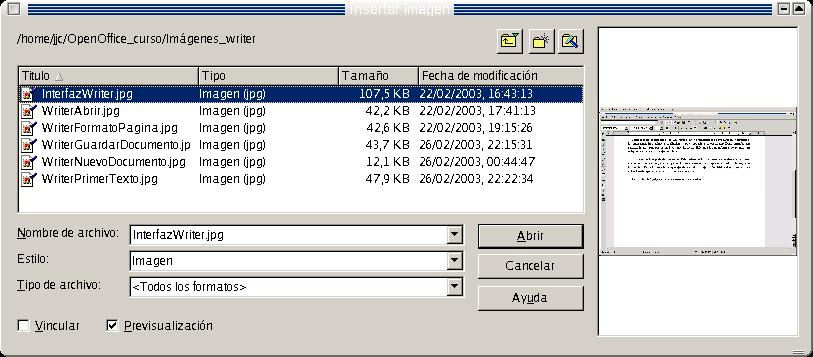
Seleccionamos la imagen, y una vez hecho esto, pulsamos en Abrir. La imagen queda insertada. Pero OpenOffice.org la inserta con alineación izquierda por defecto. Para modificar las propieades de la imagen, con el fin de que contenga las que nosotros le deseamos dar, pulsamos con el botón derecho del ratón sobre la imagen.
Al hacerlo, se deja descubrir un cuadro de diálogo flotante, con las propiedades esenciales de la imagen. Son:
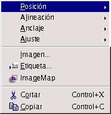
Posición: determina el lugar de la imagen con respecto al resto de elementos del texto. Es decir, si se encuenta por encima o debajo de éstos, al frente o al fondo
Alineación: Determina si la imagen se alineará a la izquierda, derecha o en el medio
Anclaje: Tal y como el término indica, se trata de especificar si la imagen se va a unir a una página, un documento o a un texto
Ajuste: Se trata de ajustar la posición del texto con respecto a la imagen. Es decir, si queremos que el texto rodee a la imagen, por dónde y cómo
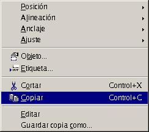
Ejercicio:
Introducir el siguiente texto:
El verano último, como todos los años, estuve una semana de excursión por las montañas. Equipado con mochila, saco de dormir, sartén y demás, subí hasta los dos mil metros. Cada día marchaba ocho o nueve horas en solitario por parajes rocosos, para ser consciente de mí mismo en el aquí y ahora.
Insertar el escudo de la Universidad con alineación a la derecha y ajuste dinámico
Insertar la imagen en el documento con alineación a la derecha y sin ajuste. Ver la diferencia
Guardar el documento como Hiperenlace1.sxw. La razón es que después se usará para la sección Insertar Hiperenlace.
Se puede insertar una tabla, bien directamente desde la barra de herramientas
bien pulsando CTRL-F12, o bien desde la barra de menús, en Insertar --> Tabla
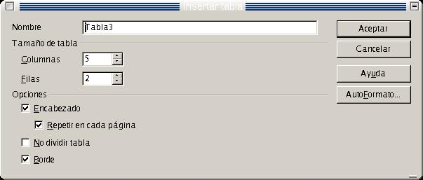
Al insertarla hemos de especificar el número de filas y columnas. Si insertamos desde la barra de menús, aparecerá el cuadro de diálogo Insertar Tabla, donde especificaremos el número de filas y el de columnas. En caso de insertar desde la barra de herramientas, el número de filas y de columnas se especifica arrastrando el mouse
Dentro de una misma tabla puedo introducir una serie de datos que luego pueden ser usados para la realización de diagramas
Un ejemplo sería el siguiente:
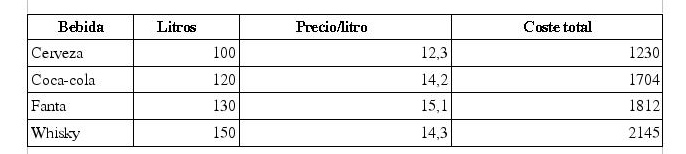
El diagrama sería el siguiente
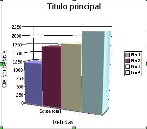
Donde en el eje de las X están situadas las filas y en el de las Y las columnas
En este caso nosotros somos los que hemos insertado la tabla y hemos introducido por teclado los datos
También puedo importar tablas que se hayan creado con Calc o con Draw. De este tema hablaremos más adelante. Puedo manipular el diagrama, y al idual que la imagen, puedo modifiar las propiedades esenciasles antes comentadas
Para crear el diagrama, lo primero a hacer es ir a la barra de herramientas, al botón insertar objetos.
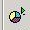
Mantengo pulsado el botón izquierdo, hasta que sale una pequeña ventana con 6 botones. Recorro la ventana hasta llegar a Insertar Diagrama.
En este momento, aparece el cuadro de diálogo AutoFormato de diagrama, que es un asistente para la realización del diagrama. Llegados a este punto, hemos de seleccionar el área que queremos sea representada en el diagrama, usando como etiqueta para los datos la primera fila o la primera columna.
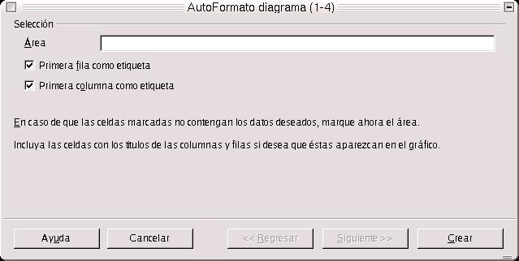
Seleccionamos el área volviendo a la tabla de datos, y manteniendo pulsado el botón izquierdo del ratón, desde la segunda fila de la izquierda, si queremos tener la primera columna como etiqueta, o desde la segunda columna de arriba, si queremos tener la primera fila como etiqueta de datos.
Una vez seleccionada el área, podemos empezar a crear el diagrama. Nos vamos al asistente de creación del diagrama. Una vez aquí, pulsamos sobre el botón Siguiente. Ahora nos invita a seleccionar el tipo de gráfico que más nos guste o interese. Los hay circulares, de barra, de áreas, líneas, columnas, etc..
Lo que más llama la atención, es que OpenOffice.org permite la realización de gráficos tridimensionales, de barras, columnas, cículos, áreas y líneas. Esto le da una gran potencia, ya que se trata de gráficos que tienen gran atractivo visual y los datos son muy fáciles de visualizar.
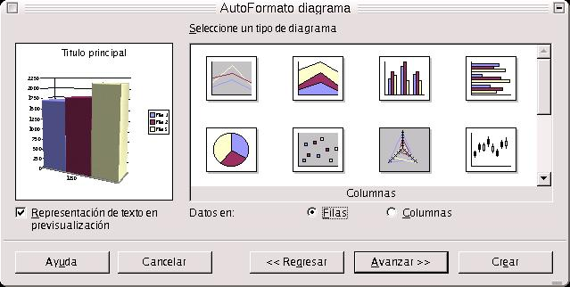
Una vez que tengo definido el tipo de gráfico que voy a usar, puedo seleccionar una variante. Es decir, que por ejemplo, el gráfico puede ser de columnas, pero éstas pueden estar apiladas, normales, en pilas o en profundidad. Las columnas de la gráfica pueden tener una forma piramidal, cilíndrica, cónica o rectangular. Es decir, que para tipo de gráfico existen varias variantes, y a su vez, debido a que son más versátiles, existen más variantes para los gráficos tridimensionales que para los de 2D
Para acabar de realizar el diagrama, se ha de indicar los títulos de los ejes X e Y, además del nombre del diagrama, e indicar si deseamos ver la leyenda.
Ejercicio:
Realizar una tabla cualquiera, con el número de filas y columnas (como sugerencia, unas 4 filas y 3 columnas) que deseemos y realizar sobre ella y realizar dos gráficos, uno en 3D y otro en círculo.
A través de las tablas, también puedo realizar etiquetas con direcciones postales, del tipo APLI, que sirven para enviar correos. Dichas etiquetas se agruparían en una tabla, que contiene 2 ó 3 columnas y 7 u 8 filas, según las dimensiones de las etiquetas marcadas por APLI.
Como se comentó en la sección de Encabezados y Pies de página, podemos insertar en el texto una serie de campos con unos valores ya preestablecidos por el programa. Los campos que podemos insertar en un texto son:
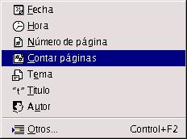
Fecha. Si se coloca el puntero en una determinada posición del texto, y lo llevo a Insertar-->Campos-->Fecha, inserta directamente la fecha actual del sistema en el texto
Hora. Inserta la hora actual del sistema
Número de Páginas. Inserta en la posición del texto que le indiquemos, el número de páginas total del documento.
Contar Páginas. Lo mismo que antes.
Tema. Inserta el tema que hemos indicado en las propiedades del documento.
Título. Inserta el título del documento, que se indicó en las propiedades del mismo
Autor. Inserta el nombre del autor, indicado en las propiedades del documento.
Como ejercicio, escribir el siguiente texto en una zona de trabajo vacía, insertando los campos que correspondan:
Hoy estamos a (fecha actual) y hace un día precioso en Salamanca. Por cierto son las (hora actual)
¿Cuántas páginas tiene este documento? Tiene (número de páginas) páginas. Estamos en la página (página actual) del mismo
¿Quién es el autor de esta obra?. Es (autor).
¿Cuál es el título del libro?. Es (título).
¿De qué tema habla?. El tema es (tema).
Para establecer las propiedades Título, Autor y Tema, vamos a Archivo-->Propiedades. Dentro del cuadro de diálogo, nos movemos a la ficha descripción y las cambiamos según nuestro gusto. Dichas propiedades sirven para identificar el documento, indicamendo el, título, descripción, tema, etc..
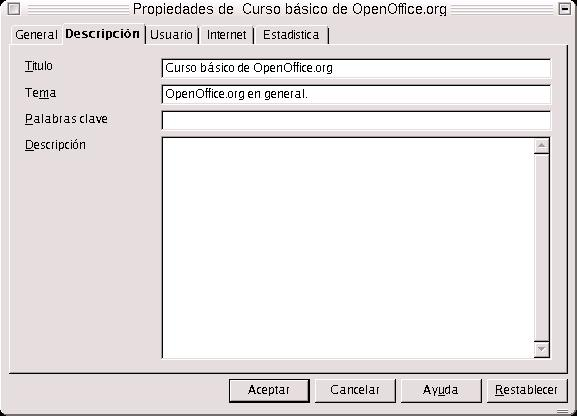
Puedo insertar, en realidad, tantos campos como quiera, y en los formatos en que quiera. Para ello me voy a Insertar-->Campos-->Otros. Y hasta puedo insertar campos de otras bases de datos
Si el documento ha sido descargado desde internet, podemos activar la casilla Autorecargar Cada, situada en la ficha Internet, y el documento es renovado cada cierto tiempo que se le indique. Es decir, que nos descargaríamos de forma autómatica las modificaciones del documento, sin que nosotros intervengamos. Esto es muy útil, si el documento que tenemos es reeditado cada hora, o cada fracción de tiempo.
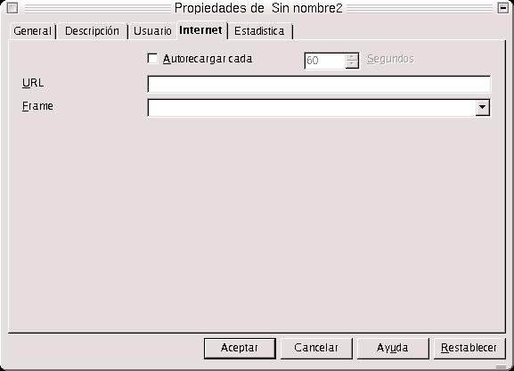
Esta opción es una de las más interesantes, ya que puedo enlazar hacia una página web, cualquier documento externo u otra zona del mismo documento.
Para hacer un hiperenlace a una dirección web, puedo escribir un texto y enlazarlo a una dirección. Si hago esto el texto aparece subrayado, adquiriendo un tono azulado, lo cual quiere decir que se interpretará como un enlace a una web.
¿Cómo hago para enlazar?. Muy sencillo, voy a seleccionar la zona de texto que deseo enlazar. La selección la hago con el mouse, manteniendo pulsado el botón izquierdo hasta llegar al final. Una vez hecho esto, dentro de la barra de funciones, voy al botón Diálogo de Hiperenlace y pulso en el recuadro Internet, que está en la esquina superior izquierda del cuadro de diálogo. En el campo Destino, escribo la URL o dirección de internet de destino.
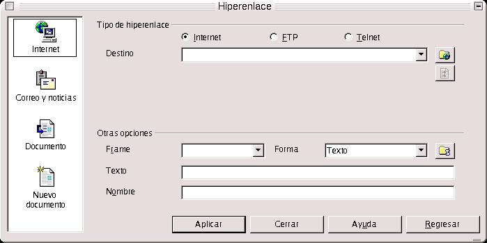
Para crear una dirección que apunte a un correo electrónico, escribimos como texto dicho correo y después hacemos el mismo proceso de antes: seleccionamos el texto, vamos a Hiperenlace, seleccionamos Correo y Noticias, y en el campos Destinatario volvemos a escribir la dirección.
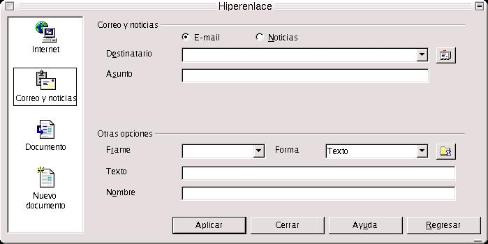
Pero es más sencillo escribir directamente la dirección. Si lo hacemos así, aparecerá subrayado y cambia a un tono azulado, lo que quiere decir que lo interpreta como un enlace a una dirección de Internet. Lo mismo pasa si escribimos una dirección de correo electrónico.
Como he citado antes, podemos enlazar a otra zona del documento. Pero para ello, primero hemos de insertar en la zona con la que deseemos enlazar, una marca de texto (insertar-->marca de texto) y más tarde, en el cuadro de diálogo, construiremos el hiperenlace, en el área Destino en el Documento. Pulsamos en el botón Destino, y nos encontraremos con una ficha que nos indica las zonas con las que podemos enlazar. También, puedo enlazar a una imagen, tabla, o cualquier objeto que esté dentro del documento.
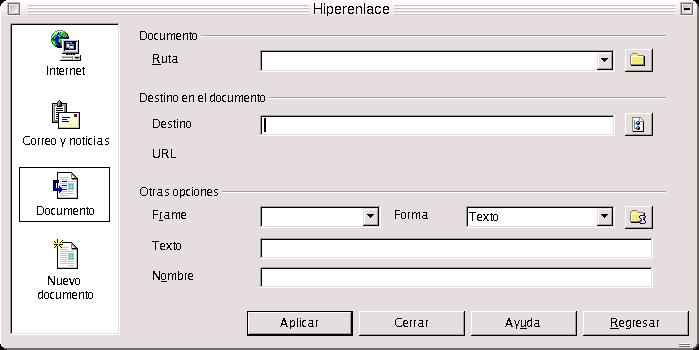
Tenemos la opción, también, de insertar un enlace a un documento que todavía no hayamos creado, pero que lo haremos en un futuro o lo vamos a editar ahora mismo. Para esto, dentro de Hiperenlace, seleccionamos Nuevo Documento. Para ello, en el cuadro Nuevo Documento, seleccionamo el tipo de documento, indicamos el nombre del archivo y buscamos pulsando en la carpeta de la derecha el directorio donde lo queremos guardar.
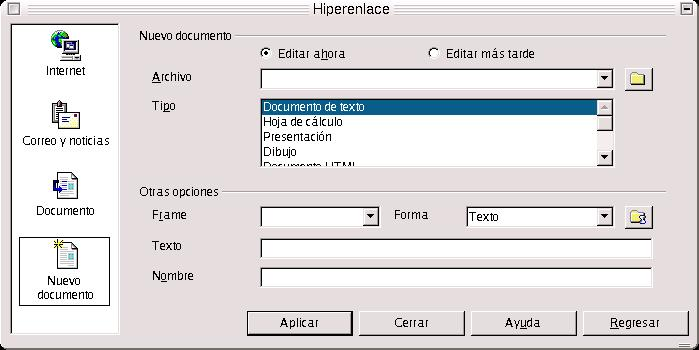
Podemos crear un enlace, a su vez, a un documento ya existente. Para ello, seleccionamos el cuadro Documento e indicamos la ruta del documento con su nombre.
Ejercicios:
Hacer un hiperenlace a una dirección de Internet y a un correo electrónico cualquiera, elegidos al azar
Ver lo que ocurre cuando se pulsan
Tenemos un documento llamado Hiperenlace1.sxw. Hacer un enlace a dicho documento
En el cuadro de diálogo, establecer las siguientes propiedades:
Frame:_blank; Forma: texto; Texto: mi primer hiperenlace a un documento; Nombre Hiperenlace1.sxw
Habiendo seleccionado Hiperenlace1.sxw como texto, hacer un enlace a la imagen que representa el escudo de la Universidad de Salamanca.
Para hacer un enlace a otro lugar dentro de un mismo documento, cogemos uno de los manuales de OpenOffice, que tienen formato sxw y se encuentran en el CD de material. Ir hacia cualquier parte del documento, poner una marca de texto. Después, ir hacia el cuadro de diálogo Hiperenlace, y en la ficha Documento, dentro del campo Destino en el Documento, pulsar sobre Destino, y seleccionando Marcas de Texto, saldrá el nombre de la marca a la zona del documento que deseamos enlazar
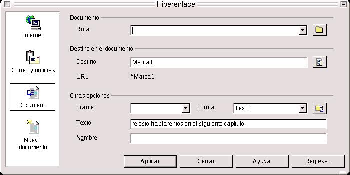